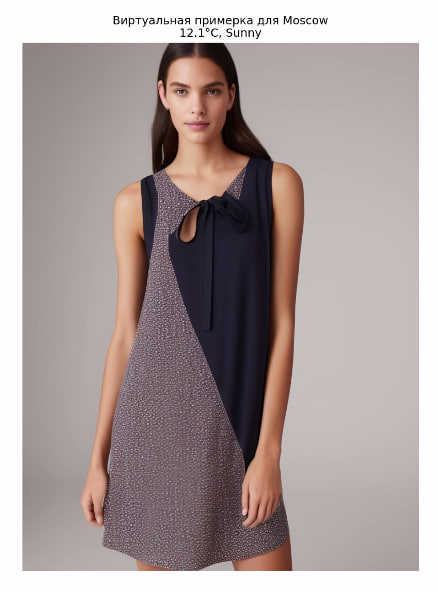

О проекте "Нейрофоторамки"
Актуальность проекта
Сфера ИИ и рынок умных устройств стремительно расширяется, и технологии, основанные на анализе данных, становятся всё более доступными. Умная фоторамка использует ИИ для анализа погодных условий и гардероба пользователя, что делает её востребованным продуктом.
Проблема, которую решает проект
Большинство умных фоторамок и метеостанций на рынке предлагают базовые функции, но не обеспечивают глубокую персонализацию. Наш проект решает проблему неэффективного выбора одежды в зависимости от погодных условий и личного гардероба.
Цели проекта
- Создание инновационной нейрофоторамки с функцией метеостанции
- Интеграция технологий AI для адаптации образов под погодные условия
- Разработка удобного и эстетичного интерфейса
- Запуск продукта на рынок с эффективной маркетинговой стратегией
Дорожная карта проекта
Этап 1: Исследование и планирование
1-2 месяца: анализ рынка, определение целевой аудитории, формирование команды
Этап 2: Разработка MVP
4-5 месяцев: прототип с базовыми функциями, тестирование на фокус-группах
Этап 3: Финальный продукт
5-6 месяцев: улучшение дизайна, добавление функций, финальное тестирование
Этап 4: Запуск и маркетинг
3-4 месяца: наладка производства, маркетинговая стратегия, старт продаж